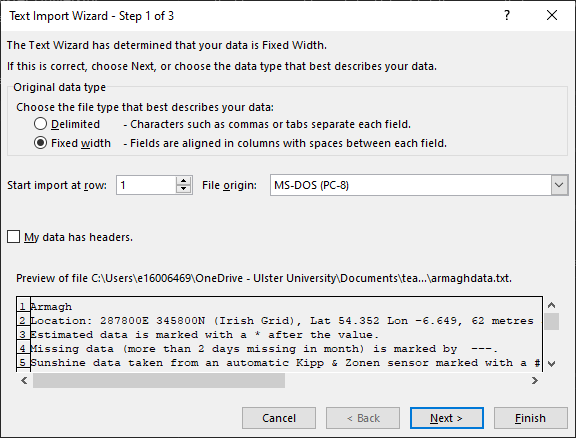
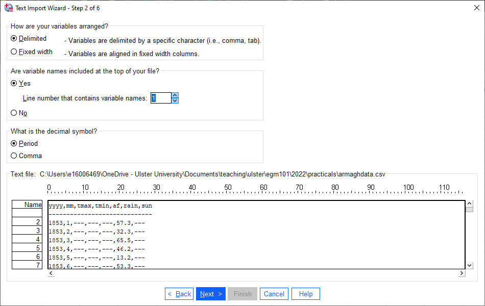

setting up a conda environment
This page provides instructions for creating a new conda environment using Anaconda Navigator and the
Note
You should have already opened a GitHub account, installed git and GitHub Desktop, forked the EGM722 repository, cloned the repository to your computer, and installed Anaconda Navigator.
If you haven’t done all of these steps, please do so now before continuing.
creating a new environment
From the Start menu, open Anaconda Navigator. When it opens, click on the Environments tab on the left-hand side of the screen. You should see the following:

As mentioned above, conda is a package management system. We can use conda to create different programming environments, which will enable us to keep track of and manage the specific versions of python packages that we use for this course. It also enables us to easily share our environment specifications across different computers, so that we be sure that any processing steps that we do are consistent and reproducible.
We will be creating a new environment using the environment.yml file provided in the git repository. A .yml file is one of the ways that we can easily duplicate environments using conda or other package management systems – it provides a list of the packages for the package management system to find and install.
Open the environment.yml file in a text editor (NB – this means NotePad, Notepad++ or something similar, NOT MS Word!). It should look something like this (the exact list of dependencies may differ somewhat):

Here, you can see the name of the environment (egm722), the channels to install packages from, listed in order of preference, and the
dependencies, or required packages.
From the Anaconda Navigator window, click on the Import button at the bottom of the Environments tab. An import window will open:
{kind=link}
Click the folder icon to navigate to the environment.yml file, select it and click Open. The window should now look like this:
{kind=link}
The Name field is automatically populated based on the .yml file, while the location specified will differ depending on where Anaconda is installed on your computer. Click Import to start setting up the environment. Depending on your connection speed and computer’s specifications, this may take some time. When it finishes, you should see the following screen:

Note how many packages were actually installed – 161, from the 5 shown in the original .yml file. This is because each of those 5 packages have additional dependencies which have to be installed as well. Fortunately, almost all of this is done automatically – we don’t have to worry about tracking down each individual dependency on our own.
installing an IDE
The next thing to do is to switch to the Home tab in Anaconda Navigator:

You should see that you have two different environments when you open the dropdown menu next to Applications on. Whenever you want to
switch environments in Anaconda Navigator, you can select the environment from this menu. You should see that when you change between
the base and egm722 environments, the list of installed applications changes – this is because we have not installed the same
applications in the different environments.
The next thing to do is to make sure that you have installed an Integrated Development Environment (IDE). This is a program that will help you, while programming, to do things like debug code, automatically check for syntax errors, and easily refactor your code.
For example, with a python interpreter set up, it can help you find and autocomplete method or attribute names:
{kind=link}
My personal preference of IDE for python is PyCharm (Community Edition), the free version of the PyCharm Professional IDE. It provides an easy, automatic interfacing with conda, git, and GitHub. You do not have to install PyCharm, but I strongly recommend that you install and use an IDE for programming. Other free options include Spyder or Microsoft Visual Studio, both of which can also interface with conda.
Spyder can be installed directly from the Anaconda Navigator, while you can download PyCharm here (be sure to download the Community Edition, not the Professional Edition), and Microsoft VS is available from here (again, be sure to download the Community Edition).
setting up the command prompt
The final step covered in this manual is to install the CMD.exe Prompt for this environment:

While not strictly required, this will enable you to directly launch a Windows Command Prompt with your egm722 environment loaded.
If you run the Anaconda Prompt from the Start Menu, it will automatically load the default (base) environment, and you will need
to switch environments using the conda activate command when you want to use your egm722 environment.
Once you have conda and an IDE set up, you are ready to move on to the lecture and practical material for Week 1.